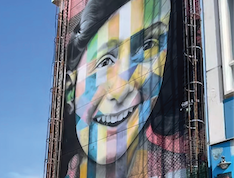
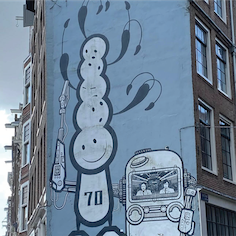
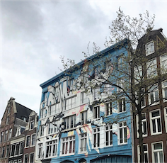
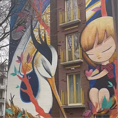
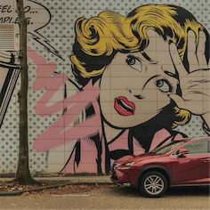

RONDJE STREETART
In Amsterdam-Noord maakte Eduardo Kobra een gigantisch kunstwerk van Anne Frank op een gebouw van drie verdiepingen met de tekst "Let me be myself". Dit stadsdeel is een paradijs voor street art liefhebbers waar je uren kunt rondlopen en genieten van de mooiste kunstwerken.
Op de hoek van Prinsengracht 70 en de Tuinstraat prijkt een muurschildering van The London Police. Het kunstwerk combineert klassieke Nederlandse architectuur met urban art.
Vrankrijk, een voormalig kraakpand aan de Spuistraat 216 in Amsterdam, is nu een woon- en werkpand met een gesplitst woongedeelte en café.
Julieta XLF maakte dit kunstwerk en zegt hierover: "Voor mij betekent Amsterdam for Everybody welkom. Het maakt niet uit waar je vandaan komt of wie je bent, er is altijd een plek voor je. Ik voelde me zelf ook erg welkom in Amsterdam."
D*Face, oftewel Dean Stockton, is een Britse street artist en grafisch ontwerper die wereldwijd bekendheid heeft gekregen met zijn gedurfde en prikkelende werk. Zijn kenmerkende stijl mixt street art, popart en grafisch design. Wibautstraat